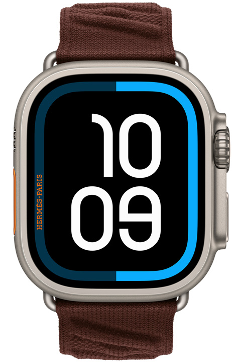

产品宣传图所示款式。图片说明列出所示机型与组件。
下方的文件数包括本地化资源。固件名称键能确认包的归属；组件的圆屏点击边界、亮屏过渡与 AOD 对照均待设备验证。
原始包 已解析属性表 Mach-O 方法与成员 ARM64 汇编 解出的图集
.strings × 44 .plist × 9 .caf × 7 .car × 1 无扩展名 × 1
原始包 已解析属性表 Mach-O 方法与成员 ARM64 汇编 解出的图集
.strings × 44 .plist × 9 .caf × 7 .car × 1 无扩展名 × 1
原始包 已解析属性表 Mach-O 方法与成员 ARM64 汇编 解出的图集
.strings × 44 .plist × 9 .caf × 7 .car × 1 无扩展名 × 1
NTKSquallFaceBundle.bundleFACE_STYLE_SQUALL_DESCRIPTION色组与设备条件 NTKSquall.color.plist 共享色组与默认值
-[NTKSquallColorPalette bezelCountUpDimmed];-[NTKSquallColorPalette bezelDimmed];-[NTKSquallColorPalette bezelDimmedFinal];-[NTKSquallColorPalette logoCountUpDimmed];-[NTKSquallColorPalette logoDimmed];-[NTKSquallBezelView setTritiumFraction:];-[NTKSquallBezelView tritiumFraction];-[NTKSquallBezelView setColorKeysDimmed:highlighted:];-[NTKSquallBezelView _dimmedColor];-[NTKSquallBezelView _renderBezelTemplateForSize:highlighted:tritium:];-[NTKSquallBezelView _renderBezelTemplateForSize:highlighted:tritium:rendererContext:];-[NTKSquallBezelView _tritiumDimmedColor];-[NTKSquallBezelView _tritiumHighlightColor];-[NTKSquallBezelView dimmedColorKey];-[NTKSquallBezelView setDimmedColorKey:];-[NTKSquallDigitalTimeView tritium_transitionToTritiumOnWithProgress:];-[NTKSquallDigitalTimeView tritium_alwaysOnTimelines];-[NTKSquallDigitalTimeView applyTritiumOnTransitionProgress:];-[NTKSquallDigitalTimeView tritium_transitionToFrameSpecifier:];-[NTKSquallDigitalTimeView _linkingFractionForTritiumFraction:];-[NTKSquallDigitalTimeView tritium_transitionToTritiumOffWithProgress:];-[NTKSquallDigitalTimeView _colorShiftFractionForTritiumFraction:];-[NTKSquallDigitalTimeView tritium_willTransitionToTritiumOffFromFrameSpecifier:];+[NTKSquallFace tritium_burnInFaceName];-[NTKSquallFaceView tritium_createFaceAnimator];-[NTKSquallFaceView _updateColorForTritiumWithProgress:];-[NTKSquallFaceView tritium_timeViews];-[NTKSquallFaceView tritium_shouldApplyOverrideDate];-[NTKSquallFaceView _updateViewColorsWithPalette:isTritiumPalette:];-[NTKSquallRegattaBezelView _renderBezelTemplateForSize:highlighted:tritium:rendererContext:];-[NTKSquallRegattaFaceView tritium_didTransitionToTritiumOn];-[NTKSquallRegattaFaceView _transitionTimerToTritiumOverrideDate:];-[NTKSquallRegattaFaceView tritium_didTransitionToTritiumOff];-[NTKSquallRegattaFaceView tritium_transitionToTritiumOnWithProgress:];-[NTKSquallRegattaFaceView tritium_alwaysOnTimelines];-[NTKSquallRegattaFaceView tritium_transitionToFrameSpecifier:];-[NTKSquallRegattaFaceView _updateColorForTritiumWithProgress:];-[NTKSquallRegattaFaceView tritium_transitionToTritiumOffWithProgress:];-[NTKSquallRegattaFaceView _setTritiumFraction:];-[NTKSquallRegattaFaceView tritium_willTransitionToTritiumOffFromFrameSpecifier:];-[NTKSquallTimeBezelView _logoDimmedColor];-[NTKSquallTimeBezelView _logoTritiumColor];-[NTKSquallTimeBezelView _renderBezelTemplateForSize:highlighted:tritium:rendererContext:];-[NTKSquallColorPalette minuteNumeralsFill];-[NTKSquallColorPalette minuteNumeralsFillLinked];-[NTKSquallColorPalette minutesBox];-[NTKSquallColorPalette minutesLabelBackground];-[NTKSquallColorPalette minutesLabelText];-[NTKSquallRegattaFaceViewDelegate dismissPickerViewAnimated:];-[NTKSquallRegattaFaceViewDelegate resetButtonPressedAnimated:];-[NTKSquallRegattaTimerModelObserver didTransitionToState:fromState:];-[NTKSquallRegattaTimerModelObserver lastMinuteTimerFired];-[NTKSquallTimerPickerViewDelegate didScrollToTimerSeconds:];-[NTKSquallTimerPickerViewDelegate didUpdateTimerToSeconds:];-[NTKSquallTimerPickerViewDelegate didStartTimerWithSeconds:];-[NTKSquallBezelView animating];-[NTKSquallBezelView setAnimating:];-[NTKSquallDigitalTimeView tritium_transitionToTritiumOnWithProgress:];-[NTKSquallDigitalTimeView tritium_alwaysOnTimelines];-[NTKSquallDigitalTimeView applyTritiumOnTransitionProgress:];-[NTKSquallDigitalTimeView _minuteFrameForLinkingFraction:font:];-[NTKSquallDigitalTimeView tritium_transitionToFrameSpecifier:];-[NTKSquallDigitalTimeView _minuteString:];-[NTKSquallDigitalTimeView _centerDateAnimated:];-[NTKSquallDigitalTimeView _attributedStringForMinute:linkingFraction:colorShiftFraction:];-[NTKSquallDigitalTimeView _minuteYForLinkingFraction:font:];-[NTKSquallDigitalTimeView tritium_transitionToTritiumOffWithProgress:];-[NTKSquallDigitalTimeView _updateLabelsAnimated:];-[NTKSquallDigitalTimeView _updateAnimating];-[NTKSquallDigitalTimeView setOverrideDate:duration:];-[NTKSquallDigitalTimeView tritium_willTransitionToTritiumOffFromFrameSpecifier:];-[NTKSquallFaceView _applyTransitionFraction:fromOption:toOption:forCustomEditMode:slot:];-[NTKSquallFaceView tritium_createFaceAnimator];-[NTKSquallFaceView _applyTransitionFraction:fromColor:toColor:];-[NTKSquallFaceView _animateInTimeView];-[NTKSquallFaceView _showTimeViewAnimated:];-[NTKSquallFaceView dismissPickerViewAnimated:];-[NTKSquallFaceView resetButtonPressedAnimated:];+[NTKSquallPropertyAnimatorFactory buttonViewsAnimatorWithAnimations:];+[NTKSquallPropertyAnimatorFactory standardViewsAnimatorWithAnimations:];-[NTKSquallRegattaBezelView didTransitionToState:fromState:];-[NTKSquallRegattaFaceView _hidePausedViewAnimated];-[NTKSquallRegattaFaceView setSoundPlayedSeconds:];-[NTKSquallRegattaFaceView _handleStartRegattaTimerIsAnimated:];-[NTKSquallRegattaFaceView tritium_didTransitionToTritiumOn];-[NTKSquallRegattaFaceView _transitionTimerToTritiumOverrideDate:];-[NTKSquallRegattaFaceView soundPlayedSeconds];-[NTKSquallRegattaFaceView didScrollToTimerSeconds:];-[NTKSquallRegattaFaceView tritium_didTransitionToTritiumOff];-[NTKSquallRegattaFaceView _showTimerPickerAnimatedWithOutView:];-[NTKSquallRegattaFaceView _showPausedViewAnimated];-[NTKSquallRegattaFaceView _hidePickerButtonsAnimator];-[NTKSquallRegattaFaceView tritium_transitionToTritiumOnWithProgress:];-[NTKSquallRegattaFaceView _handlePauseRegattaTimerAnimated:];-[NTKSquallRegattaFaceView _dismissPickerViewToTimerAnimated];-[NTKSquallRegattaFaceView tritium_alwaysOnTimelines];-[NTKSquallRegattaFaceView _dismissPickerViewToClockAnimated];-[NTKSquallRegattaFaceView _handleResumeRegattaTimerAnimated:];-[NTKSquallRegattaFaceView tritium_transitionToFrameSpecifier:];-[NTKSquallRegattaFaceView _hidePauseButtonViewAnimated];-[NTKSquallRegattaFaceView _showPickerButtonsAnimator];-[NTKSquallRegattaFaceView showTimerPickerAnimated:animateOutView:];-[NTKSquallRegattaFaceView _showPauseButtonViewAnimated];-[NTKSquallRegattaFaceView _showPickerMainViewsAnimator];-[NTKSquallRegattaFaceView _dismissPickerViewToTimerAnimated:];-[NTKSquallRegattaFaceView _hidePickerMainViewsAnimator];-[NTKSquallRegattaFaceView _setTimerDuration:];-[NTKSquallRegattaFaceView didUpdateTimerToSeconds:];-[NTKSquallRegattaFaceView _hideRegattaBezelAnimator];-[NTKSquallRegattaFaceView _handleResetRegattaTimerWithActionButtonAnimated:];-[NTKSquallRegattaFaceView _showTimerAndSmallTimeAnimated];-[NTKSquallRegattaFaceView tritium_transitionToTritiumOffWithProgress:];-[NTKSquallRegattaFaceView didStartTimerWithSeconds:];-[NTKSquallRegattaFaceView didTransitionToState:fromState:];-[NTKSquallRegattaFaceView _showRegattaBezelAnimator];-[NTKSquallRegattaFaceView _dismissPickerViewToClockAnimated:];-[NTKSquallRegattaFaceView tritium_willTransitionToTritiumOffFromFrameSpecifier:];-[NTKSquallRegattaTimerController didTransitionToState:fromState:];-[NTKSquallRegattaTimerController lastMinuteTimerFired];-[NTKSquallRegattaTimerController syncTimerToNearestMinute];-[NTKSquallRegattaTimerModel duration];-[NTKSquallRegattaTimerModel setDuration:];-[NTKSquallRegattaTimerModel lastMinuteTimer];-[NTKSquallRegattaTimerModel _notifyObserversDidTransitionToState:fromState:];-[NTKSquallRegattaTimerModel _notifyObserversLastMinuteTimerFired];-[NTKSquallRegattaTimerModel displaySeconds];-[NTKSquallRegattaTimerModel displaySecondsForDate:];-[NTKSquallRegattaTimerModel setLastMinuteTimer:];-[NTKSquallRegattaTimerModel setupLastMinuteTimerForTime:];-[NTKSquallRegattaTimerModel syncTimerToNearestMinute];-[NTKSquallRegattaTimerModelStorage durationSeconds];-[NTKSquallRegattaTimerModelStorage _isValidDuration:];-[NTKSquallRegattaTimerModelStorage _loadDuration];-[NTKSquallRegattaTimerModelStorage _loadPausedSeconds];-[NTKSquallRegattaTimerModelStorage _sanitizedDuration:];-[NTKSquallRegattaTimerModelStorage pausedSeconds];-[NTKSquallRegattaTimerModelStorage storeDuration:];-[NTKSquallRegattaTimerModelStorage storePausedSeconds:];-[NTKSquallRegattaTimerSoundsAndHapticsController setMinuteSound:];-[NTKSquallRegattaTimerSoundsAndHapticsController _playLastTenSecondsBeepSequence];-[NTKSquallRegattaTimerSoundsAndHapticsController setBeepSeconds:];-[NTKSquallRegattaTimerSoundsAndHapticsController beepSeconds];-[NTKSquallRegattaTimerSoundsAndHapticsController minuteSound];-[NTKSquallRegattaTimerSoundsAndHapticsController playSoundForSeconds:];-[NTKSquallRegattaTimerSoundsAndHapticsController playSyncedToNearestMinuteSound];-[NTKSquallRegattaTimerSoundsAndHapticsController secondDoubleSoundEven];-[NTKSquallRegattaTimerSoundsAndHapticsController secondDoubleSoundOdd];-[NTKSquallRegattaTimerSoundsAndHapticsController secondSingleSound];-[NTKSquallRegattaTimerSoundsAndHapticsController secondTripleSoundEven];-[NTKSquallRegattaTimerSoundsAndHapticsController secondTripleSoundOdd];-[NTKSquallRegattaTimerSoundsAndHapticsController setSecondDoubleSoundEven:];-[NTKSquallRegattaTimerSoundsAndHapticsController setSecondDoubleSoundOdd:];-[NTKSquallRegattaTimerSoundsAndHapticsController setSecondSingleSound:];-[NTKSquallRegattaTimerSoundsAndHapticsController setSecondTripleSoundEven:];-[NTKSquallRegattaTimerSoundsAndHapticsController setSecondTripleSoundOdd:];-[NTKSquallTimeProvider _secondsFromDate:];-[NTKSquallTimerPickerView minutePickerView];-[NTKSquallTimerPickerView pickerSeconds];-[NTKSquallTimerPickerView _minutesLabelTitle];-[NTKSquallTimerPickerView initWithFrame:currentDuration:];-[NTKSquallTimerPickerView minutesLabel];-[NTKSquallColorPalette background];-[NTKSquallColorPalette complication];-[NTKSquallColorPalette logoHighlighted];-[NTKSquallColorPalette bezelCountUpDimmed];-[NTKSquallColorPalette bezelCountUpHighlighted];-[NTKSquallColorPalette bezelDimmed];-[NTKSquallColorPalette bezelDimmedFinal];-[NTKSquallColorPalette bezelHighlighted];-[NTKSquallColorPalette bezelHighlightedFinal];-[NTKSquallColorPalette checkButtonPlatter];-[NTKSquallColorPalette checkButtonSymbol];-[NTKSquallColorPalette hourNumeralsFill];-[NTKSquallColorPalette hourNumeralsFillLinked];-[NTKSquallColorPalette logoCountUpDimmed];-[NTKSquallColorPalette logoCountUpHighlighted];-[NTKSquallColorPalette logoDimmed];-[NTKSquallColorPalette minuteNumeralsFill];-[NTKSquallColorPalette minuteNumeralsFillLinked];-[NTKSquallColorPalette minutesBox];-[NTKSquallColorPalette minutesLabelBackground];-[NTKSquallColorPalette minutesLabelText];-[NTKSquallColorPalette numeralsCountUpFill];-[NTKSquallColorPalette numeralsFill];-[NTKSquallColorPalette numeralsFillFinal];-[NTKSquallColorPalette pauseButtonPlatter];-[NTKSquallColorPalette pauseButtonPlatterFinal];-[NTKSquallColorPalette pauseButtonSymbol];-[NTKSquallColorPalette pauseButtonSymbolFinal];-[NTKSquallColorPalette pausedLabel];-[NTKSquallColorPalette playButtonPlatter];-[NTKSquallColorPalette playButtonSymbol];-[NTKSquallColorPalette resetLabel];-[NTKSquallColorPalette smallTime];-[NTKSquallColorPalette smallTimeFinal];-[NTKSquallColorPalette xButtonPlatter];-[NTKSquallColorPalette xButtonSymbol];-[NTKSquallBezelView _highlightColor];-[NTKSquallBezelView layoutSubviews];-[NTKSquallBezelView setColorPalette:];-[NTKSquallBezelView applyColorPalette:];-[NTKSquallBezelView colorPalette];-[NTKSquallBezelView setColorKeysDimmed:highlighted:];-[NTKSquallBezelView _dimmedColor];-[NTKSquallBezelView _tritiumDimmedColor];-[NTKSquallBezelView _tritiumHighlightColor];-[NTKSquallBezelView dimmedColorKey];-[NTKSquallBezelView highlightedColorKey];-[NTKSquallBezelView setDimmedColorKey:];-[NTKSquallBezelView setHighlightedColorKey:];-[NTKSquallDigitalTimeView _attributedStringForHour:linkingFraction:colorShiftFraction:];-[NTKSquallDigitalTimeView layoutSubviews];-[NTKSquallDigitalTimeView _layoutTime];-[NTKSquallDigitalTimeView applyColorPalette:];-[NTKSquallDigitalTimeView _attributedStringForMinute:linkingFraction:colorShiftFraction:];-[NTKSquallDigitalTimeView _attributedStringForLink:linkingFraction:colorShiftFraction:];-[NTKSquallDigitalTimeView _colorShiftFractionForTritiumFraction:];+[NTKSquallFace _initialDefaultComplicationForSlot:forDevice:];+[NTKSquallFace _richComplicationSlotsForDevice:];+[NTKSquallFace _orderedComplicationSlots];+[NTKSquallFace _defaultSelectedComplicationSlotForDevice:];-[NTKSquallFace _complicationSlotDescriptors];-[NTKSquallFace _localizedNameForComplicationSlot:];-[NTKSquallFace _numberOfOptionsForCustomEditMode:slot:];-[NTKSquallFace _indexOfOption:forCustomEditMode:slot:];-[NTKSquallFace _optionAtIndex:forCustomEditMode:slot:];-[NTKSquallFaceView _homeScreenDateLabelColor];-[NTKSquallFaceView _homeScreenBackgroundColor];-[NTKSquallFaceView createFaceColorPalette];-[NTKSquallFaceView _applyTransitionFraction:fromOption:toOption:forCustomEditMode:slot:];-[NTKSquallFaceView layoutSubviews];-[NTKSquallFaceView _applyOption:forCustomEditMode:slot:];-[NTKSquallFaceView _updateColorForTritiumWithProgress:];-[NTKSquallFaceView colorPalette];-[NTKSquallFaceView _applyTransitionFraction:fromColor:toColor:];-[NTKSquallFaceView _updateViewColorsWithPalette:isTritiumPalette:];-[NTKSquallPausedView _titleLabelColorForPausedViewType:];-[NTKSquallPausedView applyColorPalette:];-[NTKSquallPicayuneView layoutSubviews];-[NTKSquallRegattaBezelView _updateColorKeysIsFinalColor:];-[NTKSquallRegattaBezelView setUseFinalColor:];-[NTKSquallRegattaBezelView useFinalColor];-[NTKSquallRegattaFaceView _updateViewColors:];-[NTKSquallRegattaFaceView layoutSubviews];-[NTKSquallRegattaFaceView _updateColorForTritiumWithProgress:];-[NTKSquallRegattaFaceView applyColorPalette:];-[NTKSquallRegattaFaceView _updateToDefaultColors];-[NTKSquallRegattaFaceView _updateToFinalColors];-[NTKSquallTimeBezelView _logoDimmedColor];-[NTKSquallTimeBezelView _logoHighlightedColor];-[NTKSquallTimeBezelView _logoTritiumColor];-[NTKSquallTimerPickerView setColorPalette:];-[NTKSquallTimerPickerView viewLayoutGuide];-[NTKSquallTimerPickerView applyColorPalette:];-[NTKSquallTimerPickerView colorPalette];-[NTKSquallTimerPickerView setViewLayoutGuide:];